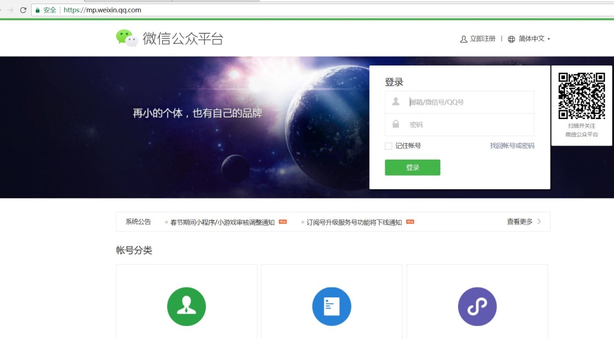
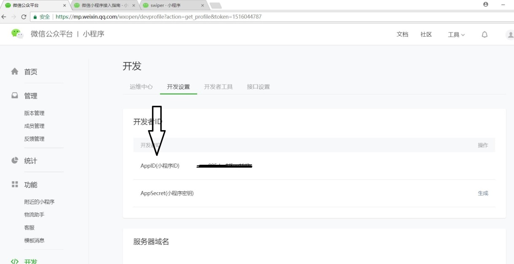
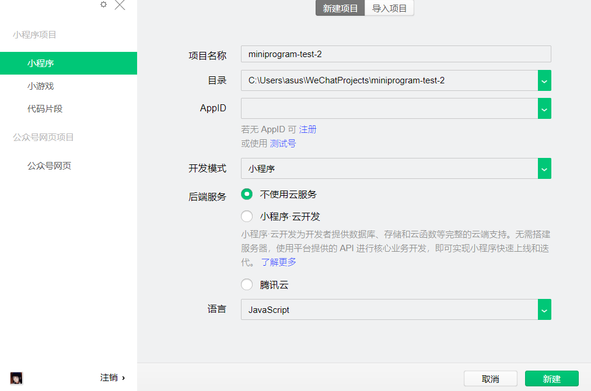
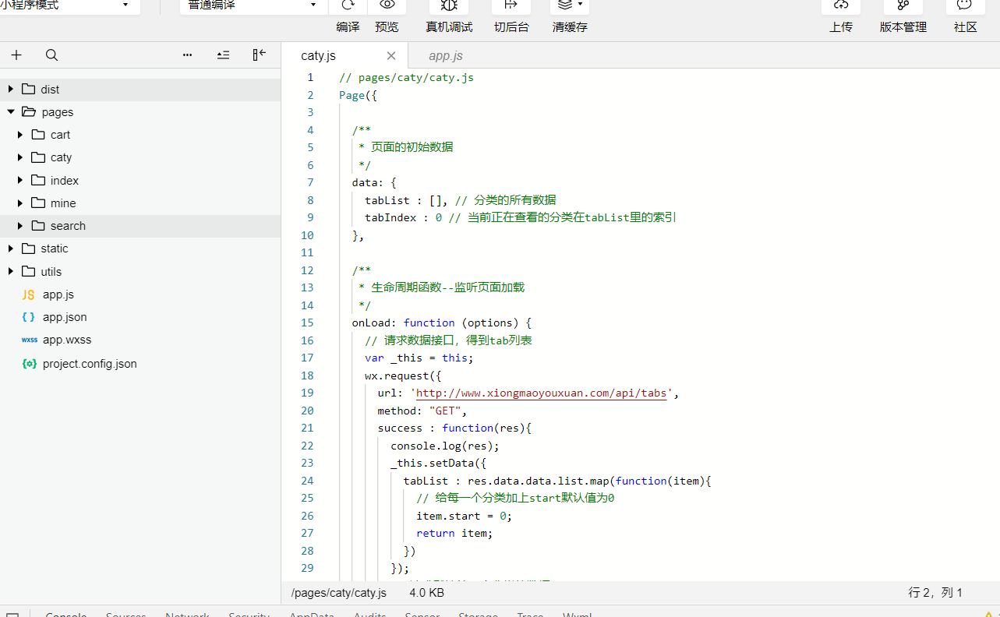
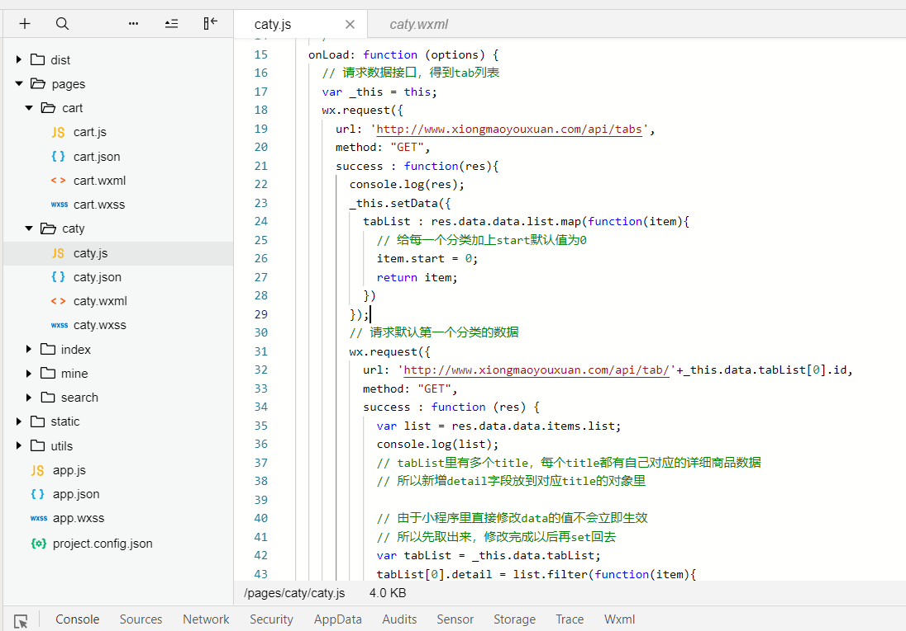
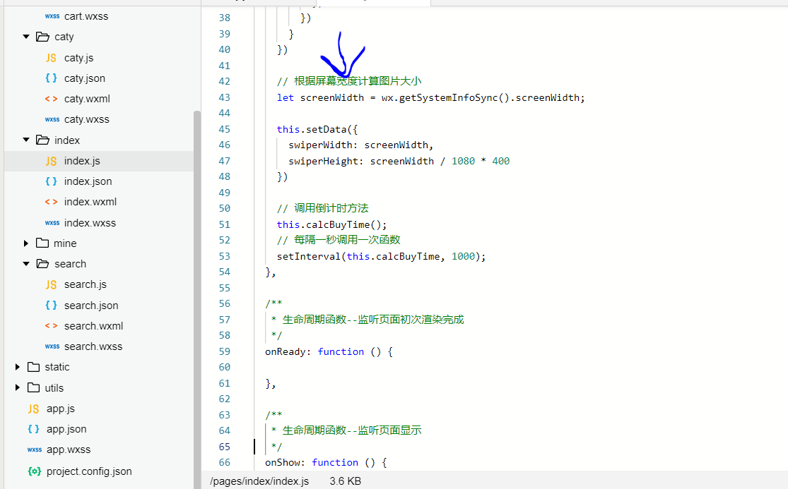
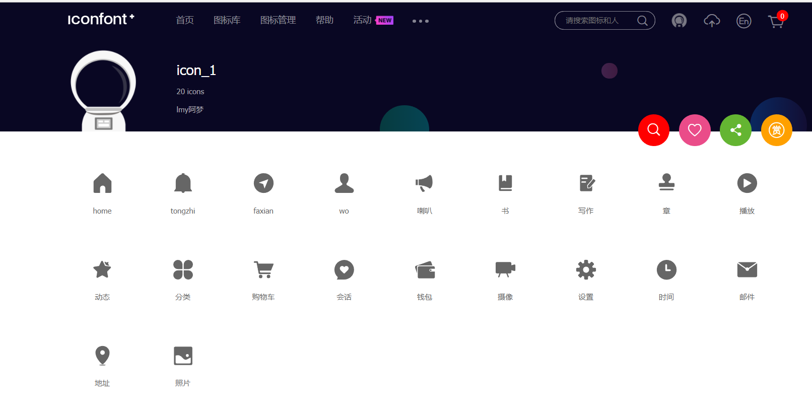
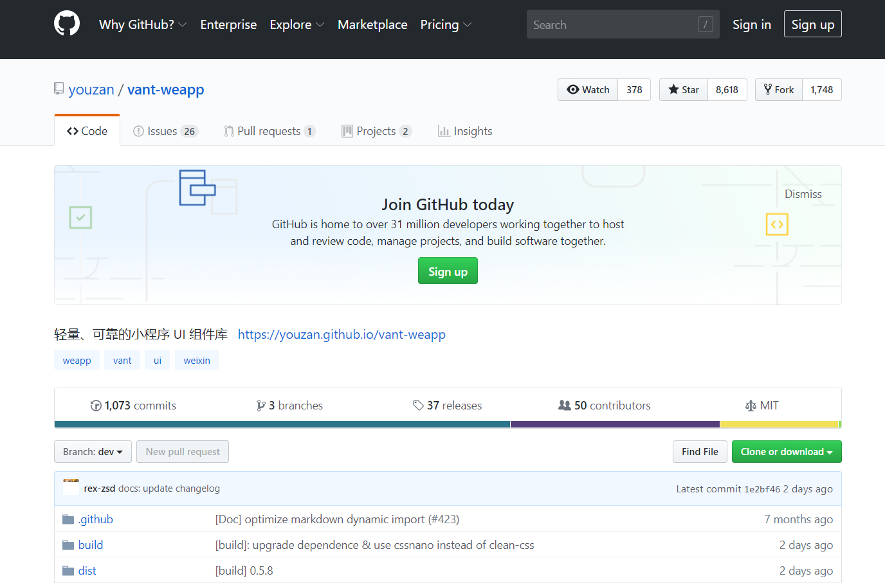

微信小程序，英文名Mini Program，是一种不需要下载安装即可使用的应用，它实现了应用"触手可及"的梦想，我们可以便捷的通过扫一扫或者搜索即可打开应用。实现了不需要下载多个app便可进行用户体验。全面开放申请后，不光是企业政府等，个人也可成为小程序的开发者，接下来让我们走进微信小程序，一起探索奇妙的小程序之旅!!
打开网址https://mp.weixin.qq.com，注册账号，激活邮箱，并下载开发工具，如下图所示。


找到开发者设置下面的APPID，紧接着下载微信web开发者工具，选择新建项目。

输入开发者设置里面的APPID，小程序项目一触即发！
注意：由于小程序默认只允许请求一个合法接口域名，所以我们在做本地项目的时候不需要去校验合法域名，在开发工具右上角，点开详情，勾选不校验域名。
如下我们可以看到项目的根目录和所有子目录：

小程序包含一个描述整体程序的app和多个描述各自页面的page，app.js是小程序的整个逻辑 、app.json是小程序的公共配置信息、app.wxss是小程序的公共样式表。而每个页面由四个文件组成，分别是：js（逻辑结构）、wxml（相当于html，页面结构）、json（页面配置）、wxss（页面样式表，相当于css）。Dist是vantUI库文件存放位置，static是存放静态资源的譬如图片等。Js文件data里的数据可以绑定到wxml里的{{}}，修改数据则要使用this.setData()。

js处理事件：在wxml通过bind绑定事件，在js里的app对象内部新增这个事件的处理函数。
wx.getSystemInfoSync().screenWidth
wx.request()
譬如：http://www.xiongmaoyouxuan.com/#/，F12用手机模式浏览，我们可以找到network里面的XHR，从header里查看url，从preview里查看返回的data值。
打开网址https://www.iconfont.cn/ ，可以去搜索项目需要的图标，然后调整图标颜色的大小，下载到本地，注意图标风格要统一。

打开网址 https://github.com/youzan/vant-weapp 下载地址，下载压缩包，解压后把dist目录放到小程序的根目录，方便程序的使用。

这是小程序独有的单位，不管任何手机屏幕宽度是多少，都可根据手机的大小自动按比例计算相应的px，具体比例是1px == 2rpx。